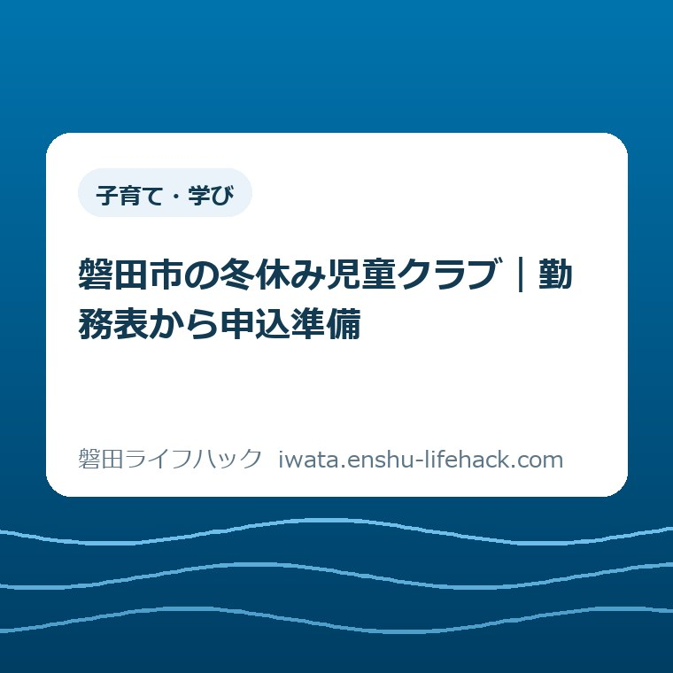
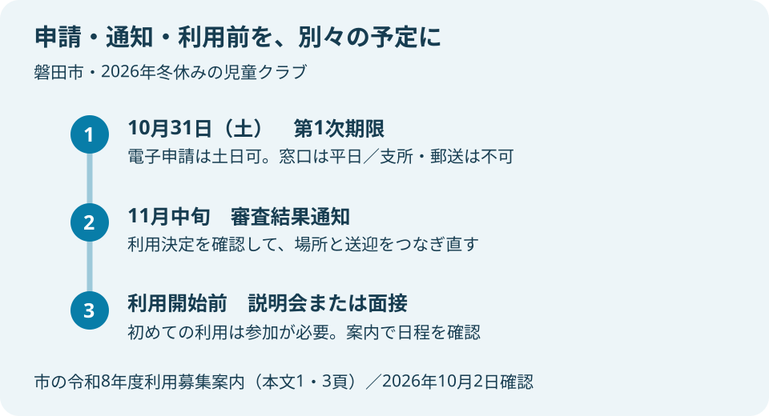
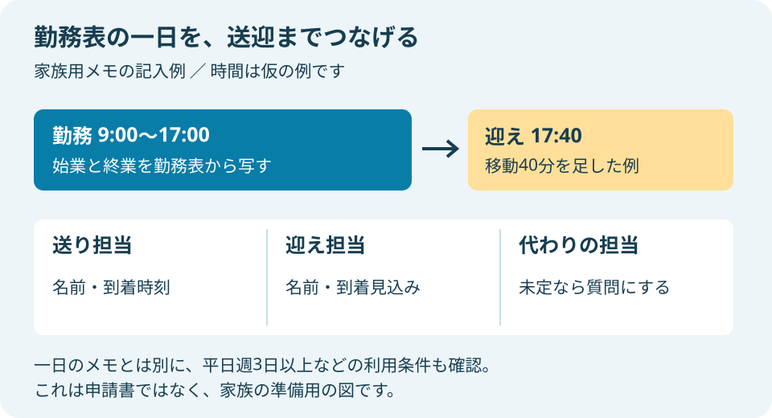

子育て・学び
磐田市の冬休み児童クラブ｜勤務表から申込準備

この記事の要点
Q. 冬休みだけ預けたい。仕事と送迎の準備は何から？
A. 利用可否は就労・家庭状況や空き状況で変わります。磐田市の2026年冬休み利用の随時受付第1次期限は10月31日、結果通知は11月中旬です。まず勤務表で預けたい日を一つ確かめ、勤務時間と送迎担当を書き添えてください。必要書類と申請方法は市の公式ページで確認します。
冬休みの申込みは、勤務と送迎をつなぐ作業
磐田市の放課後児童クラブは、就労や家庭の状況、クラブの空き状況によって利用可否が変わります。冬休みに仕事があるから必ず入れる、とは言い切れません。勤務先の予定を確かめ、家族に迎えを頼み、必要な書類を集める。申請画面を開く前から、保護者はすでに調整の手間を払っています。
冬休みだけの利用を考える家庭では、学校が休みの日と職場が休みの日がそろうとは限りません。夫婦の勤務表が別々の日に出ることもあります。祖父母に頼めるかを聞くにも、日付と時間が要ります。「早く申し込む」と言われても、その前に決めきれないことが残るのは自然です。
大石浩之（磐田市／不動産業）です。私は、制度の説明を読む前に、家族が一度に全部を決めなくても動ける入口を作りたいと考えます。この記事では、冬休みに預けたい日を勤務表で一つ選ぶところから、証明書と送迎の準備につなげます。実際の利用決定は市の審査によります。
児童クラブ全体の入口は、当サイトの放課後児童クラブの一般案内にも整理しています。ここでは制度を一通り紹介するより、2026年の冬休みに働く保護者が、誰に何を確かめると申込準備が進むかに絞ります。
第1次期限は2026年10月31日、結果通知は11月中旬
磐田市の「令和8年度放課後児童クラブ 利用募集案内」本文1頁では、冬休み利用の随時受付第1次期限を2026年10月31日、審査結果通知を2026年11月中旬としています。2026年10月2日に、市の申請ページと掲載中の募集案内を照合しました。
「随時募集」は、希望を出せばその場で枠を確保できる仕組みではありません。募集案内では、一斉募集に申請した人の審査後、欠員のあるクラブのみ案内すると説明しています。第1次期限に間に合っても、申請者の状況によっては利用を待つ場合があります。
10月31日を過ぎても、利用希望日の1か月前まで申請は受け付けます。ただし、第1次期限までの申請者の審査後に、欠員があるクラブのみの案内となります。結果が利用開始の間際になる可能性も明記されています。期限後の受付があることと、希望日に利用できることは分けて考えます。
家族の予定表には、申請期限と結果通知の時期を別々に書くと整理できます。10月の申請後に、冬休みの迎えをすべて確定したつもりにならないためです。職場へ相談するときも、「申請予定」と「利用が決まった」を区別して伝えると、後から前提が食い違いにくくなります。
2026年10月31日は土曜日です。市の電子申請は土日祝も可能ですが、窓口の受付は平日です。紙で出すつもりの家庭は、期限当日に窓口へ行く予定を組まないようにしてください。電子申請も、書類不備の確認まで休日に対応してもらえると考えず、準備を先に進めるのが私の勧めです。

勤務表の一日と、平日週3日以上の条件を分ける
磐田市の募集案内では、就労を理由に長期休業期間を利用する場合、7時30分から18時30分までの間で4時間以上、平日週3日以上の勤務が必要です。授業のある日の基準とは異なります。冬休みだけの利用は、長期休業期間の欄で確かめます。
今日の準備として一日を選ぶのは、利用基準が一日だけで満たせるという意味ではありません。困る場面を具体的にするためです。日付の横に始業・終業を書いたら、別に平日の勤務日数も見ます。勤務時間と週の勤務日数の両方を、市へ説明できる形にしておきます。
たとえば9時から17時の勤務なら、その時間を家庭のメモに写します。この例は書き方の説明であり、利用承認の例ではありません。休憩の扱いや変則勤務で条件の読み方に迷う場合は、自己判断で時間を足さず、就労証明書に記載される内容を添えて市に確認します。
まだ12月の勤務表が出ていない家庭は、確定している勤務条件と、未確定のシフトを分けて書く方法があります。「未定」と残したうえで、勤務先には予定が出る時期を、市には申請時に必要な証明内容を確認します。仮の勤務を確定した事実のように申請することは避けます。
募集案内には、夜間勤務のみで開所時間に在宅する場合は基準を満たさないことも書かれています。昼夜の交代制では、昼間の勤務が条件に該当するかで扱いが変わります。夜勤という言葉だけで利用できる・できないを決めず、勤務の並びを示して相談するほうが具体的です。
同じ住民票の世帯に70歳未満の祖父母がいる場合も、保護者と同様に就労・疾病等の状態について確認が必要です。「迎えを頼める祖父母がいるか」という家庭内の相談と、市の利用基準にある同居の条件は別の確認です。家族関係だけで結論を出さず、該当する証明書を調べます。
勤務表は準備の道具、就労証明書は申請の書類
磐田市の募集案内本文2頁では、利用申請書・同意書、調査票、申請理由を証明する書類をそろえて申請するよう案内しています。就労が理由なら就労証明書が必要です。勤務表を手元に置いて考えることと、勤務表だけを提出すれば申請できることは同じではありません。
市は就労状況を確認するため、勤務表等の提出や勤務先への確認を行う場合があるとしています。まず自分の予定を説明できるように勤務表を見て、その後に正式な証明をそろえる順番です。独自に作った家族の送迎メモを、就労証明書の代わりとして扱わないでください。
証明書類は、申請日の3か月以内に発行されたもののみ有効です。保育園の入園申請で提出した書類のコピーも使えるとされていますが、手元にあるという理由だけで今回も有効とは決められません。発行日を見て、証明内容が現在の状況と合うか、提出先へ確かめます。
勤務先への依頼は、証明書の様式を渡すことだけでは終わりません。誰が発行を担当するか、受け取れるのはいつか、記載の確認はどこへ連絡するかを聞くと、自分では動かせない待ち時間が見えます。発行に何日かかるかは勤務先ごとに異なるため、この記事では一律の日数を置きません。
未就学のきょうだいの手続きも重なる家庭には、磐田市の保育園申込み準備の記事が、勤務先に書類を頼む順番の参考になります。保育園と児童クラブでは申請先や条件が異なります。証明の控えを残しても、申請自体はそれぞれに確認が必要です。
兄弟姉妹で児童クラブを申し込む場合も、一人ずつ申請します。募集案内では証明書類は児童一人分を原本、他の児童分をコピーとする扱いも示しています。必要な枚数を子ども別に確認し、電子申請なら各申請に添付する画像を準備しておくと、提出漏れを見つけやすくなります。
送迎は「終業時刻」から移動時間を足して考える
磐田市の令和8年度利用申請ページでは、長期休業期間の開所時間を7時30分から18時30分としています。18時を過ぎて18時30分までの延長時間には別途料金がかかります。仕事が終わる時刻だけでなく、実際に迎えに着ける時刻を見積もる必要があります。
家族の記録には、日付、勤務時間、送り担当、迎え担当、迎えの到着見込みを書きます。たとえば17時終業、移動に40分を見込むなら、迎えの目安は17時40分です。この40分は計算を説明する仮の例で、磐田市内の特定区間の実測値ではありません。各家庭の通勤経路で置き換えてください。
同じ小学校に複数の児童クラブがある場合、利用するクラブは事務局が振り分けると募集案内にあります。希望する建物に決まる前提で送迎時間を確定するのは避けたいところです。通知で利用場所が分かったら、勤務先からの経路と、子どもを引き渡す場所を確認します。

土曜日や祝日に働く家庭は、平日と同じ場所で利用できるとも限りません。市のページでは土曜・祝日の開所先を4か所にまとめています。利用条件も別に示されているので、必要な曜日を先に伝え、利用場所と送迎を確認します。冬休みの平日分だけを見て、土曜の段取りまで済んだとは考えないことです。
冬休みの始まりと終わり、年末年始の休所日は、子どもの学校の予定とクラブの案内を重ねて確認してください。この記事では学校別の日程や各家庭の利用可能日を確定していません。仕事がある日でもクラブが開いていると決めつけず、その日の利用について確認する余白をメモに残します。
初めて磐田市の児童クラブを利用する場合は、利用開始前の説明会または面接への参加が必要です。募集案内では、参加できない場合は利用を開始できないとしています。申請を送った後にも家族の時間が必要になるので、通知を受けてからの日程調整も予定に含めます。
良い点は、外出せずに申請でき、通知時期も読めること
磐田市の冬休み児童クラブ申請は、電子申請を選べるため、書類をそろえた後に窓口へ出かける負担を減らせます。市の案内では24時間、土日祝も申請可能です。平日に仕事と送迎が続く家庭にとって、申請するためだけの移動を減らせる点を私は評価します。
第1次期限と11月中旬の通知時期が示されている点も、家族が予定を組む材料になります。職場に相談する際、冬休みの見通しをいつ見直すかを伝えられるからです。ただし、通知時期が分かることは利用承認の約束ではありません。予定表にも、その区別を残しておきます。
証明書類のコピーに関する扱いが示されていることも助かります。きょうだいや保育園の手続きが重なるとき、同じ内容を何度も勤務先に依頼せずに済む可能性があります。期限と内容の確認は必要ですが、控えを保管する意味が分かる案内になっています。
注文したい点は、家庭が止まる場所を先に見せてほしいこと
冬休みの申込準備では、勤務表が未確定、証明書が未発行、迎え担当が未定という別々の理由で手が止まります。私は、申請の入口に「勤務未確定なら何を相談するか」という案内があると、家庭が次の連絡先を選びやすいと考えます。これは制度の事実ではなく、使う側の段取りを考えた私の要望です。
10月31日が土曜日という点も、期限の横で窓口と電子申請を分けて読めると助かります。日付だけを予定表に写すと、平日の窓口受付が頭から抜けることがあります。個々の職員の対応ではなく、申請方法を選ぶ時点の見せ方について、もう一段の案内を望みます。
豊田や福田などの身近な支所で用事をまとめたい家庭もあるはずです。しかし児童クラブの申請は、郵送・支所窓口では受け付けません。磐田市の4支所窓口でできることと読み合わせる場合も、この手続きは別扱いです。出かけてから受付先の違いが分かる負担は減らしたいと考えます。
対案・結論——今日は勤務表の一日に印をつける
冬休みの児童クラブを考える家庭が今日できる一歩は、預けたい日を勤務表で一つ確かめることです。その日に勤務があると分かれば、始業・終業と送迎の空欄が見えます。冬休み全体を完成させようとせず、まず一行だけを家族の相談材料にします。
一行を作った後の連絡先は、空欄の内容で変わります。勤務の予定なら勤務先、利用基準や証明書の扱いなら市の担当、送り迎えなら家族です。「全部まだ分からない」と抱えるより、何の答えを誰が持っているかを分けると、同じ質問を何度もやり直さずに済みます。
市に聞くときは、「冬休みだけ希望、小学何年生、勤務は何時から何時、平日は週何日、未確定なのはどこ」と手元の事実を伝えます。募集案内の問い合わせ先は、放課後活動課児童クラブグループ、電話0538-37-2773です。家庭ごとの利用可否は、担当へ確認してください。
書面を持参する場合、市の担当窓口は国府台3-1の西庁舎3階で、平日8時30分から17時15分です。各児童クラブでの申請受付は平日13時から18時です。クラブが子どもを預かる開所時間と、申請書を受け付ける時間は異なるので、訪問する用件を決めてから時間を確かめます。
電子申請では証明書等の画像を添付します。文字や発行日が読める写真を用意し、送信後は申請完了メールと申請内容を残します。市は同じ児童への重複申請に注意を促しています。届いたか不安なときは、家族が別々に送り直す前に履歴を確認するのがよいと考えます。
大石の視点——手続きの前に、人の時間が動いている
私は、申請準備を「フォームに入力する時間」だけで数えるべきではないと考えます。勤務先が証明を書く時間、家族が迎えを調整する時間、結果を待つ間に別の予定を保留する時間があります。制度があっても、誰がいつ動くかが見えなければ、生活の予定には組み込めません。
正直に言えば、10月に冬休みの勤務がまだ見えない家庭へ、早く決めればよいとは私も言い切れません。締切を守る必要と、仕事の予定が出る時期は別だからです。だからこそ、確定していない部分を隠して埋めるより、未定の一欄を質問に変えて相談する順番を勧めます。
申請を出したことと、預け先が決まったことは別です。家族の手間を軽く見るほど、この間の調整が抜け落ちます。勤務表の一日から始め、通知が来たら利用場所と送迎をつなぎ直す。それが、私の考える冬休み利用の準備です。
必要書類、利用料、開所日、個別の利用可否は家庭の条件や案内の更新によって変わります。この記事だけで判断を完了せず、最後は磐田市の公式「令和8年度 放課後児童クラブの利用申請」と募集案内で、現在の条件を確認してください。
よくある質問
磐田市の冬休み児童クラブの申込みで、期限・証明書・受付先について確認したい点を整理します。
10月31日を過ぎたら、冬休み利用は申し込めませんか？
2026年10月31日の第1次期限後も、利用希望日の1か月前まで申請を受け付けます。ただし、第1次期限までの申請者の審査後、欠員があるクラブのみの案内です。結果通知が利用開始間際になる可能性もあり、希望日に利用できるとは限りません。現在の募集状況と個別条件は磐田市へ確認してください。
勤務表だけで、冬休みの児童クラブを申請できますか？
就労を理由とする申請には就労証明書が必要です。勤務表は家庭で日程を整理する道具であり、市が追加で提出を求める場合もあります。利用申請書・同意書、調査票などもそろえます。証明書類は申請日の3か月以内の発行が条件です。未確定の勤務や変則勤務の証明方法は、市へ確認してください。
10月31日の土曜日に、支所で申請できますか？
郵送・支所窓口では申請できません。2026年10月31日は土曜日で、市の担当窓口と各児童クラブの申請受付は平日のみです。電子申請は土日祝も可能で、案内では最終日23時59分までの入力完了が必要です。必要書類を先にそろえ、送信後の申請完了メールを保存してください。
参考にした公式情報
- 令和8年度磐田市放課後児童クラブ 利用募集案内（本文1〜3頁）／磐田市（2026年10月2日確認）
- 令和8年度 放課後児童クラブの利用申請／磐田市（2026年10月2日確認）
最終確認日：2026-10-02 ／ 本記事は公表情報と執筆者の見解を分けて記載しています。制度・数値・公開状況は変更される場合があるため、最新情報は磐田市公式ページでご確認ください。